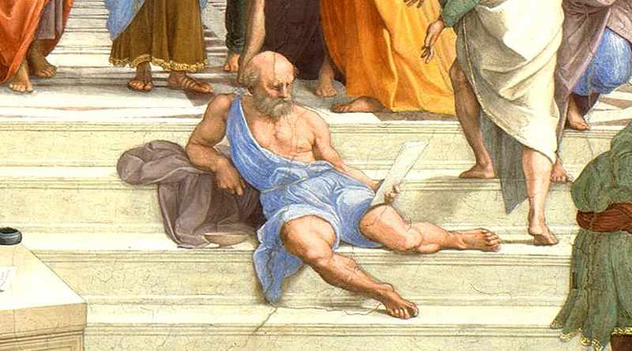

El cinismo es una de las manifestaciones más radicales de la filosofía y también de las más incomprendidas. Los cínicos consideran que la forma de vivir es parte fundamental de la filosofía e inseparable de su manera de pensar.
Sin embargo, no todos los integrantes de este movimiento tienen las mismas actitudes externas ni los mismos comportamientos, por lo que a veces se habla de filosofía cínica, otras veces de actitud cínica y otras simplemente de locura.
El término cínico es uno de esos términos que han ido perdiendo su significado original y transformándose en otro distinto al que tuvo en sus orígenes. Tanto es así que hay algunas propuestas para usar los términos quínico o kínico, con el fin de diferenciar claramente el concepto de cínico en su sentido original del que se usa hoy en día, es decir, diferenciar en concepto de cínico en sentido filosófico, de su sentido popular.
Filosóficamente de lo que se trata, es de retomar o de pensar de un modo nuevo y diferente algunos temas antiguos, ya que el paso del tiempo ha cambiado completamente su significado, su origen y desarrollo han sido velados, para llegar a significar hoy, poco más que un insulto.
El cinismo es una filosofía teórica y una práctica, pero también una forma de vida, aunque esta carácterística se empezó a perder enseguida, es una filosofía que pretende alcanzar la felicidad mediante la sabiduría y la ascesis.
Uno de los rasgos que diferencia al cinismo de otros movimientos es precisamente la importancia que dan a la ascesis, la práctica continua del ejercicio mental y físico, como camino para conseguir un estado de ánimo apropiado para alcanzar la autosuficiencia, que les libere de los imprevistos y les endurezca para permanecer impasibles ante "adversarios existenciales" como el hambre, el frío o la pobreza, que no dependen de ellos. Esta actitud les emparentaba con el estoicismo, aunque su desverguenza les volvía a alejar.
Se pueden distinguir dos fases en el movimiento cínico: la primera fase se desarrolló básicamente en Grecia, durante los siglos -IV y -III, la segunda fase se desarrolló en las grandes ciudades del imperio romano: Roma, Alejandría y Constantinopla, y duró desde los siglos I a V.
El nombre de cínicos tiene dos orígenes diferentes asociados a sus fundadores. El primero viene del lugar donde Antístenes solía enseñar, que era un gimnasio llamado Cinosarges, que se puede traducir como el perro blanco o el perro veloz. El segundo origen tiene que ver con comportamiento de Antístenes y de Diógenes, que se asemejaba al de los perros, por lo cual la gente les apodaba con ese nombre (kinicós). Está comparación viene por el modo de vida que habían elegido estos personajes, por su idea radical de libertad, su desvergüenza y sus continuos ataques a las tradiciones y los modos de vida sociales.
Sin embargo detrás de todo esto, el cinismo pretendía dar una respuesta individual a la incertidumbre que se vivía en este periodo de crisis cultural, manifestando su malestar y descontento, y también librarse de los caprichos de la fortuna, guiando al individuo hacia la felicidad. Este camino no era fácil así que se necesitaba un entrenamiento, una disciplina para a conseguir una plena autonomía moral y a ser posible también física. Era característico de los cínicos la transgresión continua, tanto de los valores tradicionales, como de las normas sociales.
Los cínicos tomaron como modelos a la naturaleza y los animales, los adoptaron como ejemplos de autosuficiencia y basándose en ello propusieron un modelo de comportamiento ético que consideraban fundamental para alcanzar la felicidad, aunque esto solo era posible mediante una rigurosa disciplina física y mental. Proponen la necesidad de la autoafirmación individual frente a una sociedad alienante y coaccionadora.
El cinismo es una forma de vivir, pero también de pensar y de expresarse, y como no se han conservado las obras de los primeros cínicos, hoy son conocidos en gran parte por dichos y anécdotas (chreiai), que fueron transmitidos en forma de colecciones, la más usada es la de Diógenes Laercio, referencia fundamental para el estudio no solo de los cínicos, sino de gran parte de la filosofía anterior a su autor. Utilizaron recursos literarios diversos donde no faltan la parodia, la sátira, la anécdota o la burla, pero siempre de forma escandalosa y provocadora.